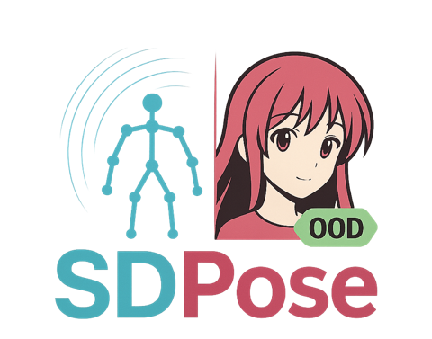
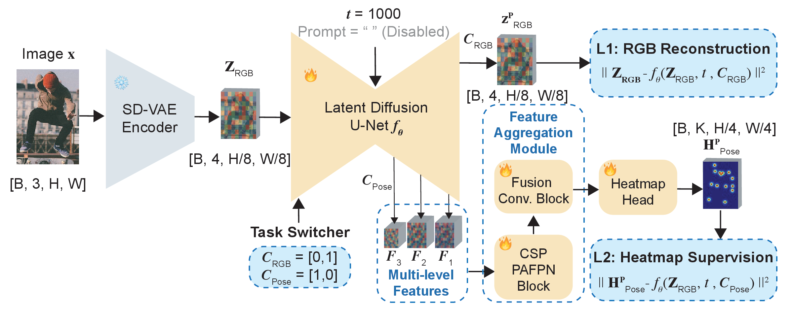
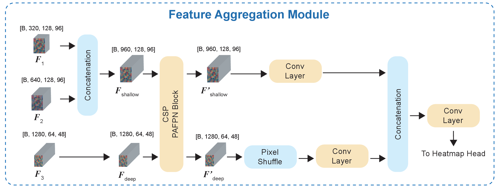
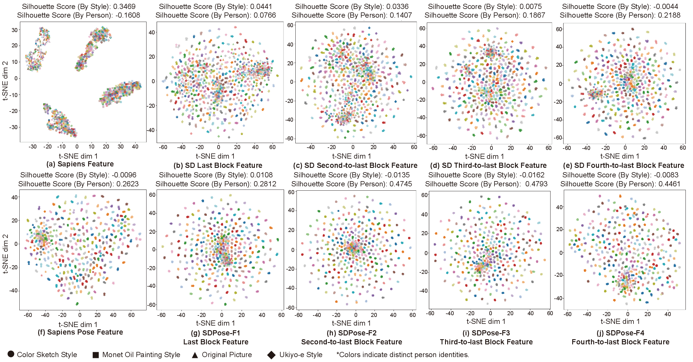
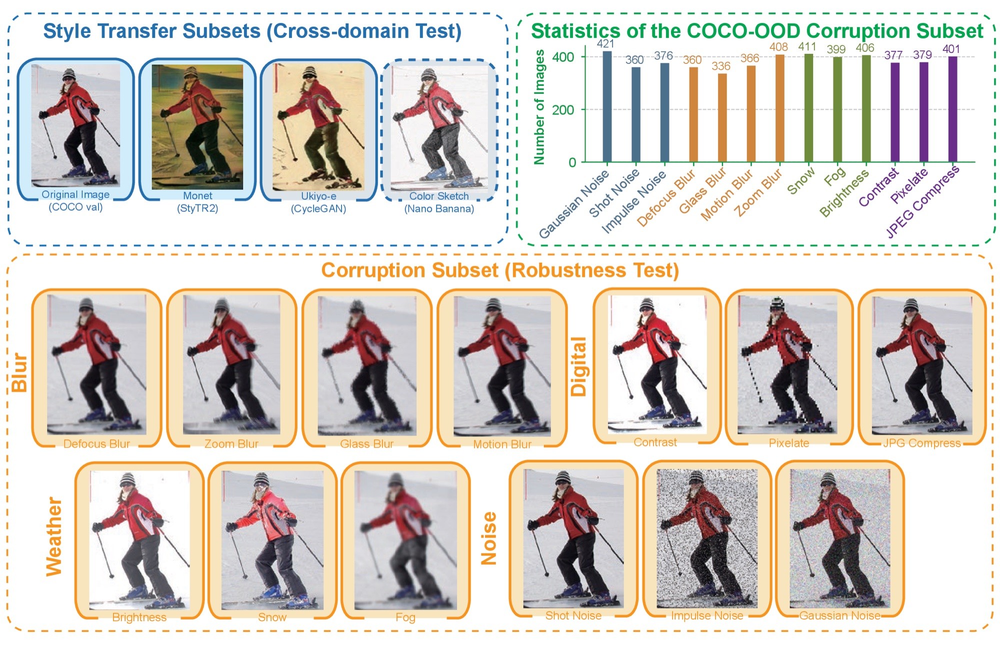
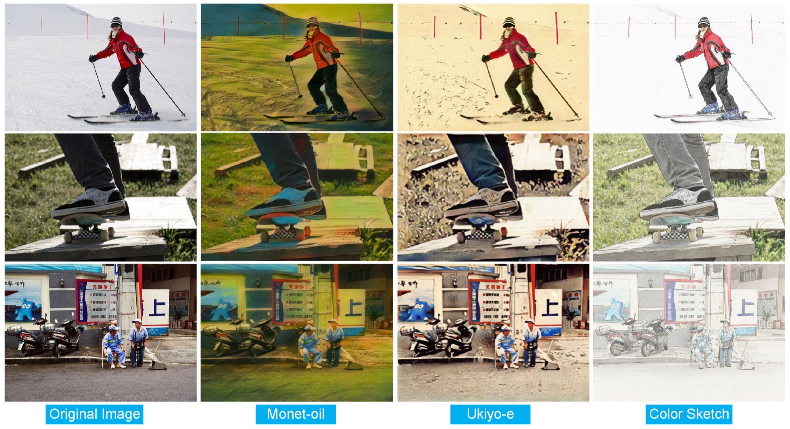
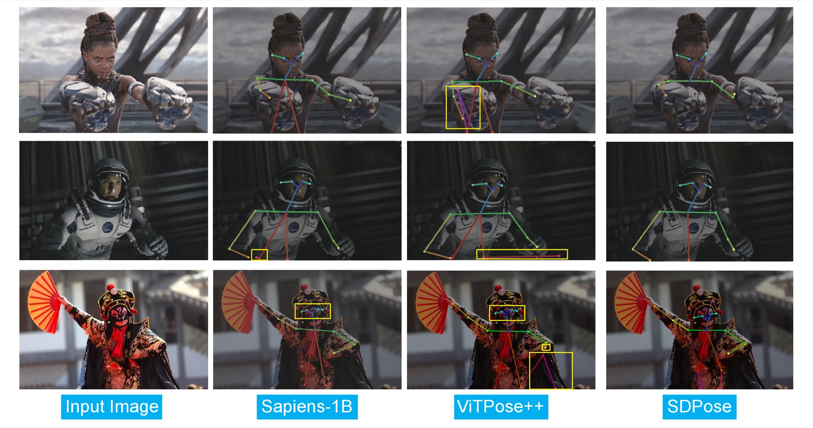
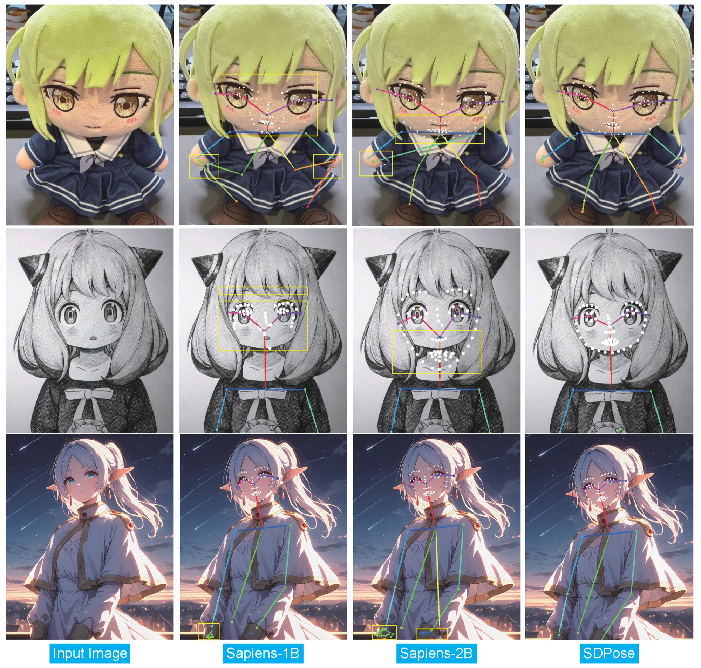
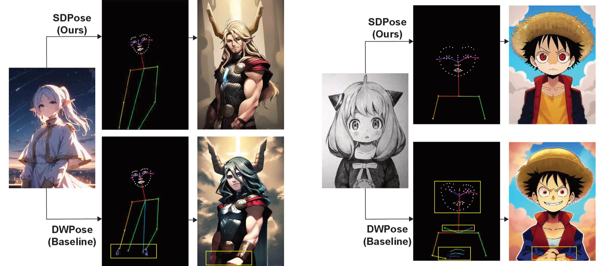
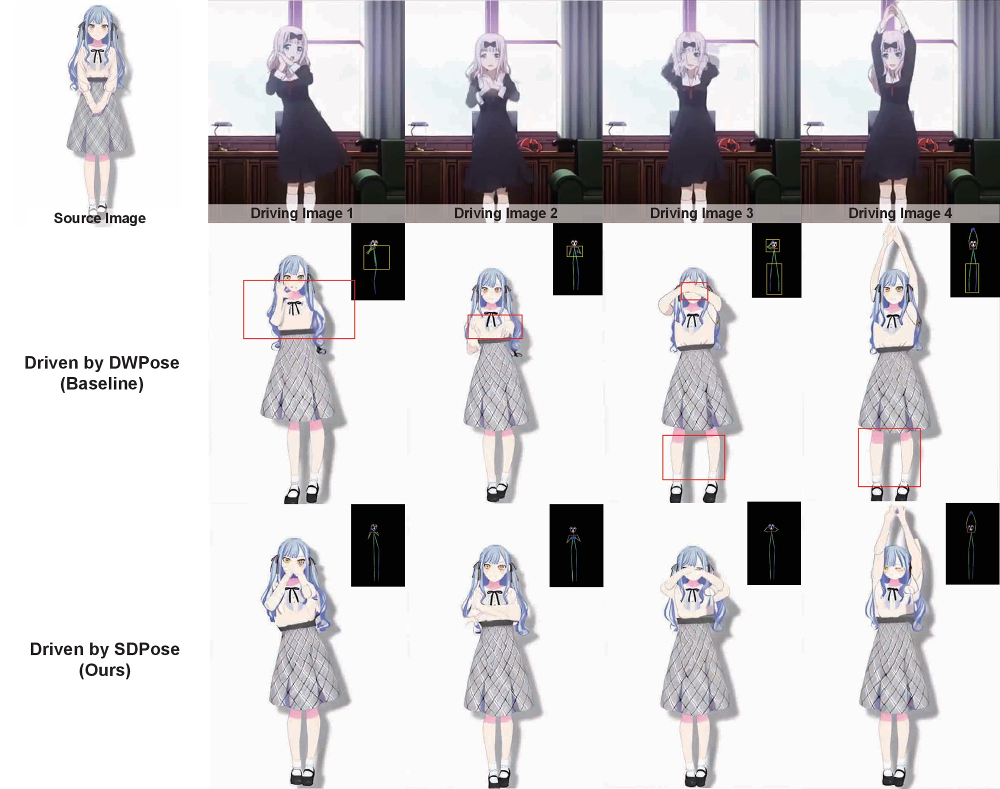

Pre-trained diffusion models provide rich latent features across U-Net levels and are emerging as powerful vision backbones. While prior works such as Marigold and Lotus repurpose diffusion priors for dense geometric perception tasks such as depth and surface normal estimation, their potential for cross-domain human pose estimation remains largely unexplored. Through a systematic analysis of latent features from different upsampling levels of the Stable Diffusion U-Net, we identify the levels that deliver the strongest robustness and cross-domain generalization for pose estimation. Building on these findings, we propose SDPose, which (i) extracts U-Net features from the selected upsampling blocks, (ii) fuses them with a lightweight feature aggregation module to form a robust representation, and (iii) jointly optimizes keypoint heatmap supervision with an auxiliary latent reconstruction loss to regularize training and preserve the pre-trained generative prior. To evaluate cross-domain generalization and robustness, we construct COCO-OOD, a COCO-based benchmark with four subsets: three style-transferred splits to assess domain shift, and one corruption split (noise, weather, digital artifacts, and blur) to test robustness. With a shorter fine-tuning schedule, SDPose achieves performance comparable to Sapiens on COCO, surpasses Sapiens-1B on COCO-WholeBody, and establishes new state-of-the-art results on HumanArt and COCO-OOD.
The input image is encoded by a frozen SD-VAE encoder and fed into the SD U-Net. From the U-Net upsampling hierarchy, we denote candidate features from the last four upsampling blocks as {F1, F2, F3, F4} (from shallower to deeper). Rather than using all levels, a level-wise study identifies the features that are both discriminative for keypoint prediction and stable under style shifts, and SDPose keeps the subset {F1, F2, F3}.

Deeper features tend to be more stable under style shifts, whereas shallower features retain finer spatial details for localization. A lightweight CSPNeXt-style PAFPN performs top-down and bottom-up fusion across {F1, F2, F3}, and the fused feature is forwarded to a lightweight convolutional head that predicts keypoint heatmaps.

To preserve the generative priors and mitigate overfitting to the pose domain, we adopt the Detail Preserver strategy with an auxiliary RGB latent reconstruction objective. A task/class embedding C ∈ {CRGB, CPose} switches the behavior of the shared denoising U-Net fθ. The overall objective is
ℒ = ‖ZRGB − fθ(ZRGB, t, CRGB)‖22 + ‖HPose − HPPose‖22
We adopt a deterministic single-step setting with the timestep fixed to t = 1000. At inference, the image latent ZRGB goes through one U-Net forward pass with the class label CPose and an empty text embedding.
Using t-SNE and silhouette scores on 1,200 person crops (300 COCO instances with three COCO-OOD style variants), pre-trained Sapiens exhibits strong style-driven clustering, while SD U-Net features show much weaker style separation and increasingly stronger person-instance coherence in deeper upsampling blocks. After pose fine-tuning, the mid-level SDPose blocks (F2–F3) reach the highest instance coherence while keeping style silhouettes close to zero.

The single-level ablations agree: F1 gives the best in-domain localization, F2 is the most robust under pure style shift, and F4 is too coarse. SDPose therefore fuses {F1, F2, F3}, and the gain from aggregation is largest for whole-body estimation, where hands and face need both global context and local detail.
| Model Variant | Ablation Setting | COCO | HumanArt | COCO-OOD Monet | |||
|---|---|---|---|---|---|---|---|
| AP | AR | AP | AR | AP | AR | ||
| SDPose-Body | Single Feature Baseline (Last Block F1) | 81.3 | 85.2 | 71.2 | 73.9 | 63.5 | 68.2 |
| + Feature Aggregation Module | 81.2 (-0.1) | 85.3 (+0.1) | 71.8 (+0.6) | 74.6 (+0.7) | 64.0 (+0.5) | 68.7 (+0.5) | |
| w/o RGB Reconstruction | 80.8 (-0.5) | 84.9 (-0.3) | 69.8 (-1.4) | 72.6 (-1.3) | 62.5 (-1.0) | 67.3 (-0.9) | |
| w/o Diffusion Priors | 74.9 (-6.4) | 79.4 (-5.8) | 53.8 (-17.4) | 58.0 (-15.9) | 52.7 (-10.8) | 57.9 (-10.3) | |
| Second-to-last Block (F2) | 81.1 | 85.0 | 70.4 | 73.3 | 64.3 | 68.9 | |
| Third-to-last Block (F3) | 81.0 | 85.1 | 70.6 | 73.3 | 63.5 | 68.2 | |
| Fourth-to-last Block (F4) | 79.2 | 83.4 | 65.0 | 68.1 | 58.1 | 62.8 | |
| SDPose-Wholebody | Single Feature Baseline (Last Block F1) | 70.5 | 77.5 | N/A | N/A | 44.7 | 53.0 |
| + Feature Aggregation Module | 72.8 (+2.3) | 79.4 (+1.9) | N/A | N/A | 48.4 (+3.7) | 56.0 (+3.0) | |
| Second-to-last Block (F2) | 71.5 | 78.4 | N/A | N/A | 46.6 | 54.8 | |
| Third-to-last Block (F3) | 70.4 | 77.6 | N/A | N/A | 45.5 | 53.8 | |
| Fourth-to-last Block (F4) | 64.6 | 72.1 | N/A | N/A | 37.1 | 45.4 | |
Ablation studies on diffusion priors, RGB reconstruction, U-Net feature selection, and representation aggregation. All experiments are trained on COCO with 40 epochs (body, 17 keypoints) or 42 epochs (wholebody, 133 keypoints).
To complement HumanArt and enable OOD evaluation with matched content and labels, we translate all COCO val images into three artistic domains: Monet-style paintings with StyTR2, Ukiyo-e with CycleGAN, and color sketch with Nano Banana. We additionally build a corruption split inspired by ImageNet-C, with 13 corruption types spanning noise (Gaussian, shot, impulse), blur (defocus, glass, motion, zoom), weather (snow, fog, brightness), and digital distortions (contrast, pixelation, JPEG compression). Each image receives one uniformly sampled corruption at severity 3 under a fixed random seed. All subsets reuse the original COCO val annotations (bounding boxes and keypoints).


With only 40 training epochs on an SD-v2 backbone, SDPose-Body reaches 81.2 AP / 85.3 AR on COCO, on par with Sapiens-1B/2B while using 5× fewer epochs and a smaller backbone. Under domain shift, SDPose sets new state-of-the-art results on HumanArt and the COCO-OOD subsets. SDPose-Wholebody surpasses the parameter-matched Sapiens-1B on COCO-WholeBody and leads all COCO-OOD wholebody splits.
| Variant | Model | Pre-trained Backbone |
Params | COCO | HumanArt | COCO-OOD Monet |
COCO-OOD Ukiyo-e |
COCO-OOD Corruption |
|||||
|---|---|---|---|---|---|---|---|---|---|---|---|---|---|
| AP | AR | AP | AR | AP | AR | AP | AR | AP | AR | ||||
| Body | Sapiens-1B | Sapiens ViT | 1.169B | 82.1 | 85.9 | 64.3 | 67.4 | 58.8 | 63.3 | 61.5 | 66.2 | 68.6 | 73.2 |
| Sapiens-2B | Sapiens ViT | 2.163B | 82.2 | 86.0 | 69.6 | 72.2 | 59.6 | 64.0 | 62.3 | 66.8 | 70.3 | 74.8 | |
| GenLoc | Stable Diffusion-v1.5 | 0.98B | 77.6 | 80.7 | 67.0 | 70.8 | N/A | N/A | N/A | N/A | N/A | N/A | |
| SDPose (Ours) | Stable Diffusion-v2 | 0.98B | 81.2 | 85.3 | 71.8 | 74.6 | 64.0 | 68.7 | 66.1 | 70.9 | 70.1 | 75.0 | |
| Wholebody | Sapiens-1B | Sapiens ViT | 1.169B | 72.7 | 79.2 | N/A | N/A | 38.7 | 46.8 | 40.5 | 49.4 | 48.4 | 57.8 |
| Sapiens-2B | Sapiens ViT | 2.163B | 74.4 | 81.0 | N/A | N/A | 44.4 | 53.0 | 46.6 | 55.8 | 52.8 | 62.5 | |
| SDPose (Ours) | Stable Diffusion-v2 | 0.98B | 72.8 | 79.4 | N/A | N/A | 48.4 | 56.0 | 50.0 | 58.2 | 54.3 | 63.1 | |
Quantitative comparison across COCO, HumanArt, COCO-OOD Monet, COCO-OOD Ukiyo-e, and COCO-OOD Corruption. All models are trained on COCO. HumanArt only provides 17-keypoint annotations. GenLoc results on WholeBody and some COCO-OOD subsets are unavailable because its model and code have not been publicly released. Full comparisons across more models are in the supplementary material of the paper.


For human or humanoid character generation, an accurate skeleton is essential for transferring poses between characters. Traditional pose estimators often fail on art-based human or humanoid characters. Compared with DWPose as the pose annotator for ControlNet, SDPose yields more precise and detailed skeletons, enabling reliable pose transfer and high-quality image generation for artistic characters.

Extracting reliable control conditions remains critical for high-quality controlled video generation. SDPose provides more accurate poses for the driving frames, enabling reliable pose-sequence transfer from animations to animations. Video frames are generated by Moore-AnimateAnyone.

@inproceedings{liang2027sdpose,
title={SDPose: Exploiting Diffusion Priors for Out-of-Domain and Robust Pose Estimation},
author={Liang, Shuang and He, Jing and Liao, Lejun and Wang, Chuanmeizhi and Zhang, Guo and Chen, Yingcong and Yuan, Yuan},
booktitle={Proceedings of the IEEE/CVF Winter Conference on Applications of Computer Vision (WACV)},
year={2027}
}